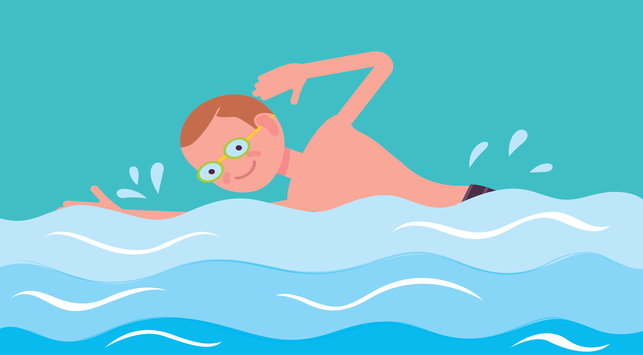
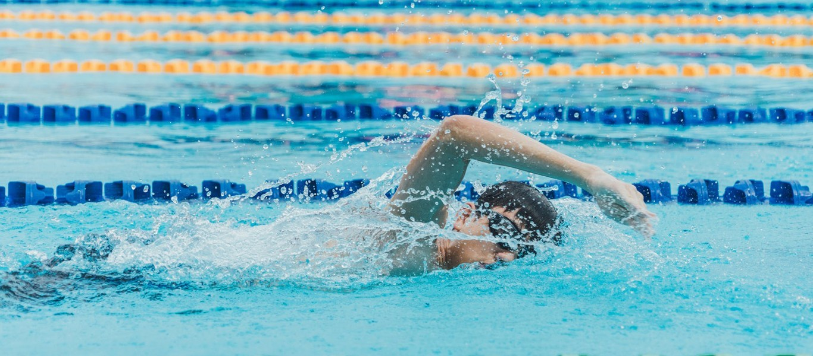

Left
Renang
Middle
Renang adalah gerakan berpindah tempat secara teratur di air dengan cepat menggunakan tangan dan kaki. Gaya renang yang diperlombakan adalah gaya bebas, gaya kupu-kupu, gaya punggung, dan gaya dada. Perenang yang memenangkan lomba renang adalah perenang yang menyelesaikan jarak lintasan tercepat. Pemenang babak penyisihan maju ke babak semifinal, dan pemenang semifinal maju ke babak final.

Renang menjadi salah satu cabang olahraga yang dilombakan sejak Olimpiade Athena 1896. Nomor renang putri dilombakan sejak Olimpiade Stockholm 1912. Pada 1902, Richard Cavill memperkenalkan renang gaya bebas. Federasi Renang Internasional dibentuk pada 1908. Gaya kupu-kupu pertama kali dikembangkan pada tahun 1930-an. Pada awalnya, gaya kupu-kupu merupakan variasi gaya dada sebelum dianggap sebagai gaya renang tersendiri pada 1952.

Right
Panjang kolam renang lintasan panjang adalah 50 m sementara lintasan pendek adalah 25 m.
Artikel Renang Lainnya